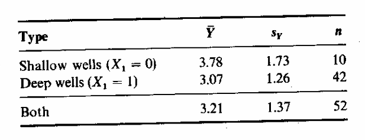
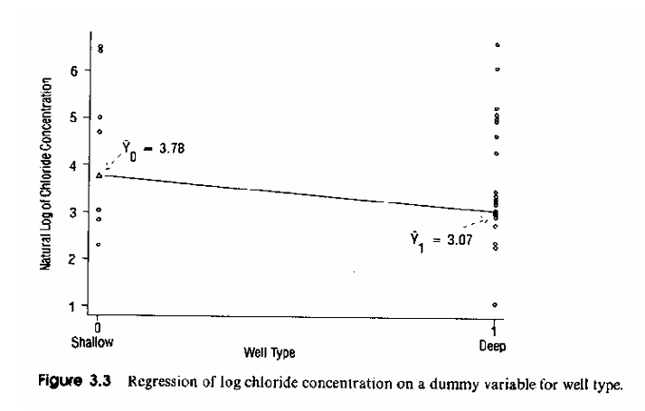
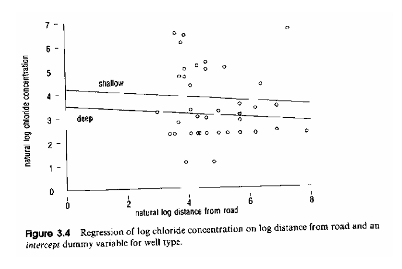
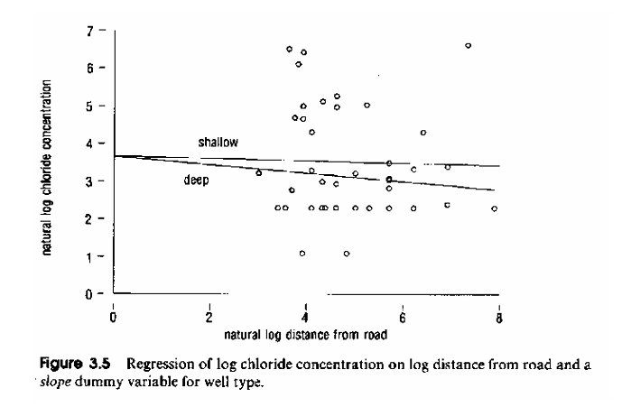

Hamilton Chapter 3B: Multiple Regression Analysis
1 Interaction Effects
What are interaction effects?
[a] Two or more exogenous variables are tied together, and their levels jointly act on the dependent variable. These ties make a direct interpretation of the slope parameter associated with each individual variable impossible.
[b] Thus, an interaction is more than the simple sum of impacts from both each parent variables (a.k.a main effects) on the endogenous variable.
[c] The change associated with the variation in one variable becomes dependent on the levels of other variables.
Consequence: Regression parameters can no longer be interpreted as partial effects, because their impact dependents on the levels of other variables. Consequently, \(\Delta\hat{Y} \neq b_k \cdot \Delta X_k\).
Conditional effect plots, though, can be used to visualize the effect (see HAM p 161 and the effects library).
Discuss example in HAM pp 84-85 for the slope coefficient of \(\Delta X\):
Let \(\hat{Y}_i = b_0 + b_1 \cdot X_i + b_2 \cdot W_i + b_3 \cdot (X_i \cdot W_i)\)
Then any change \(\Delta X\) leads to a change in \(\Delta\hat{Y}\) that is
\[\Delta\hat{Y} = (b_1 + b_3 \cdot W_i) \cdot \Delta X\]
Thus the change in \(\Delta\hat{Y}\) depends on the given level of \(W_i\)
| If \(W\) is: the slope coefficient of \(X\) becomes | |
|---|---|
| \(W_i = 0\) | \(b_1 + b_3 \cdot 0 = b_1\) |
| \(W_i = 1\) | \(b_1 + b_3 \cdot 1 = b_1 + b_3\) |
| \(W_i = 2\) | \(b_1 + 2 \cdot b_3\) |
If \(b_1\) and \(b_3\) have opposite signs the direction of the relationship between \(X\) and \(Y\) may change direction in dependence of the given level of \(W_i\).
The regression coefficients \(b_1\) and \(b_2\) associated with \(X_i\) and \(W_i\), respectively, are called main effects, whereas the coefficient \(b_3\) associated with \(X_i \cdot W_i\) is called interaction effect.
Products of the independent variables lead to interaction effects. See script attend.r and the model.matrix( ) function.
Interaction effects increase the risk of multicollinearity because the product of two independent variables shares common information inherited from both its parent variables.
Interaction effects of a variable with itself also allows to model non-linear relationships between the dependent and independent variables.
See for instance a quadratic function with \(\hat{y}_i = b_0 + b_1 \cdot x_i + b_2 \cdot x_i^2\) and the script hPrice2.r.
Furthermore, in the economic Cobb-Douglas production function (or remember the university crime versus police force example) all independent variables measure implicitly interaction:
\[y_i = b_0 \cdot x_{i1}^{b_1} \cdot x_{i2}^{b_2} \cdot e_i\]
This highly non-linear model can be transformed into a linear form by the log-transformation:
\[\Rightarrow \log(y_i) = \log(b_0) + b_1 \cdot \log(x_{i1}) + b_2 \cdot \log(x_{i2}) + \log(e_i)\]
under the assumptions that \(e_i \sim i.i.d.\) log-normal then \(\log(e_i) \sim normal\) as well as \(x_{i1} > 0\) and \(x_{i2} > 0\) in order to apply the logarithmic function.
2 Binary Indicator Variables in Regression Analysis
A dummy variable specification allows the inclusion of a categorical independent variable.
Consequently, independent variables do not need to be on a metric measurement scale.
Note: For categorical independent variables transformations (e.g., log- or z-transforamtions) become meaningless.
In regression analysis and analysis of variance terminology a categorical variable is called a factor and operationalized by a set of indicator variables associated with levels of the categorical variable.
A categorical variable with more than two levels is coded into several indicator variables.
Example with three (\(J = 3\)) mutually exclusive categorical levels in a factor:
| Coding based on Class Membership | ||||
|---|---|---|---|---|
| Class Membership of Observation \(i\) Group \(j\) | Intercept | \(D_{i1}\) | \(D_{i2}\) | \(D_{i3}\) |
| Group \(j = 1\) | 1 | 1 | 0 | 0 |
| Group \(j = 2\) | 1 | 0 | 1 | 0 |
| Group \(j = 3\) | 1 | 0 | 0 | 1 |
This leads to a regression system, which becomes depending on an observation’s classification:
[a] for belonging to category 1: \(\hat{y}_i = b_0 + b_{D_1} \cdot 1 + b_{D_2} \cdot 0 + b_{D_3} \cdot 0\)
[b] for belonging to category 2: \(\hat{y}_i = b_0 + b_{D_1} \cdot 0 + b_{D_2} \cdot 1 + b_{D_3} \cdot 0\)
[c] for belonging to category 3: \(\hat{y}_i = b_0 + b_{D_1} \cdot 0 + b_{D_2} \cdot 0 + b_{D_3} \cdot 1\)
Only conceptionally there are as many dummy variables as there are categories \(J\). In practice, one category is redundant and needs to be dropped from the analysis leaving just \(J - 1\) levels.
This category becomes the reference for the remaining dummy regression coefficients \(b_{D_j}\) and is associated to the intercept level \(b_0\).
Note: The full set of J dummy variables becomes multicollinear with the intercept: \(1 = D_{i1} + D_{i2} + D_{i3}\).
Thus either the intercept or a dummy variable associated with one class needs to be dropped from the model. This is usually the last. See the R-function help for relevel and reorder.
After dropping the dummy variable \(D_{i3}\) associated with last category, we get the model predictions:
[a] for category 1: \(\hat{y}_i = b_0 + b_{D_1} \cdot 1 + b_{D_2} \cdot 0\)
[b] for category 2: \(\hat{y}_i = b_0 + b_{D_1} \cdot 0 + b_{D_2} \cdot 1\)
[c] for category 3: \(\hat{y}_i = b_0 + b_{D_1} \cdot 0 + b_{D_2} \cdot 0\)
\(\Rightarrow\) Thus the last class is expressed by the intercept \(b_0\).
Interpretation of the coefficients in terms of class means:
\(\bar{y}_{j=1} = b_0 + b_{D_1}\)
\(\bar{y}_{j=2} = b_0 + b_{D_2}\)
\(\bar{y}_{j=3} = b_0\)
Thus the coefficients \(b_{D_1}\) and \(b_{D_2}\) measure the variation of the class means around the mean of the reference group \(j = 3\).
Important: To decide whether the entire factor is relevant its parameters need to be tested simultaneously with a partial F-test.
Retirement in the water consumption example is a dummy variable
- For non-retired households (\(D_{i,retire} = 0\)) the regression equation becomes:
\[Y_i = 242 + 21 \cdot X_{i,Income} + 0.49 \cdot X_{i,Water80} + 42 \cdot X_{i,Education} + 189 \cdot \underbrace{0}_{D_{i,retire}} + 248 \cdot X_{i,poep81} + 96 \cdot X_{i,cpeop}\]
- Whereas, for retired households (\(D_{i,retire} = 1\)) the equation becomes:
\[Y_i = 242 + 21 \cdot X_{i,Income} + 0.49 \cdot X_{i,Water80} + 42 \cdot X_{i,Education} + 189 \cdot \underbrace{1}_{D_{i,retire}} + 248 \cdot X_{i,poep81} + 96 \cdot X_{i,cpeop}\]
Thus, for retired households the intercept becomes: \(431 = 242 + 189\).
3 Interaction between Indicator and Metric Variables in Regression Analysis
Indicator variables allow us to model different regression regimes simultaneously and to cope with model heterogeneity.
Each regime has its own intercept, slope or even both.
However, all regression regimes must still satisfy the model assumptions of OLS. In particular, that the disturbance for each regime of observation has same distributional properties, such as, identical variances.
3.1 Example: Hamilton’s Wells in Dependence of Distance and Shallowness (pp 86-92):
The variables are \(Y = cholrin\), \(X_1 = well\ status\) and \(X_2 = distance\ from\ road\).
This is a simplified example. The well variable \(X_1\) has only two categories \(J = 2\) and we code a dummy variable as 1 for the deep wells and 0 for shallow wells.
The model becomes: \(\hat{Y}_i = b_0 + b_1 \cdot X_{i1}\). This model specification is identical to the simple t-test for a difference in means: \(H_0: \mu_{deep} = \mu_{shallow}\). (see HAM p 86)

For shallow wells we get \(\hat{Y}_i = 3.78 - 0.7 \cdot (0) = 3.78\) and for deep wells we get \(\hat{Y}_i = 3.78 - 0.7 \cdot (1) = 3.08\)

- Different intercepts: Distance and intercept dummy
\[\hat{Y}_i = 4.21 - 0.7 \cdot X_{i1} - 0.09 \cdot X_{i2}\]
- Different slopes: distance and interaction between distance and well dummy variable
\[\hat{Y}_i = 3.67 - 0.03 \cdot X_{i2} - 0.08 \cdot X_{i1} \cdot X_{i2}\]

- Different slopes and different intercepts: Combination of both previous models
\[\hat{Y}_i = 9.07 - 6.72 \cdot X_{i1} - 1.11 \cdot X_{i2} + 1.26 \cdot X_{i1} \cdot X_{i2}\]
For shallow wells \(X_{i1} = 0\) the equation becomes
\[\hat{Y}_i = 9.07 - 1.11 \cdot X_{i2}\]
and for deep wells \(X_{i1} = 1\) it comes
\[\hat{Y}_i = 2.35 + 0.15 \cdot X_{i2}\]

All individual coefficients are significantly different from zero (see Table 3.4)
- A partial F-test can be conducted to test whether simultaneously the shallow/deep indicator variable and its interaction with the distance from the road are significant
\[F = \frac{(95.44 - 77.54)/2}{77.54/48} = 5.54\]
It’s p-value at 2 and 48 degrees of freedom is 0.007. So, both effects are jointly relevant.
Each model could have been estimated independently for just the subset of observations matching shallow and deep wells. However, the simultaneous perspective has advantages:
Nested models allow for partial testing of whether we have different regression regimes for both well types?
We can work with larger degrees of freedom because all observations and not just a subset associated with a particular factor level are included in the model.
Problems of the approach: There is the possibility that the multicollinearity within the model increases.
Correlation between the indicator variable with the overall intercept.
Correlation of the interaction indicator terms with the main effect of its parent variable.
Note for sets of indicator variables based on more than two categories:
[a] Insignificant (measured by their t-value) indicator variable levels in a set of indicator variables for a categorical variable should be kept in the model, because
the significance (level a parameter difference from zero) of individual indicator variables depends on which arbitrarily reference level has been dropped from the analysis.
There are other coding specifications for the indicator variables than just the binary [0/1] coding scheme, which change the estimated parameters of the included factor levels and their interpretation. See the effect-coding (1,0,-1) in Hamilton page 99.
\(\Rightarrow\) This leads to different significance levels for the individual categories
[b] The set of indicator variables is related to one factor. Thus, the whole categorical factor needs to be tested by a partial F-test.
That is, a model with all indicator variables versus a model without any indicator variables.
\(\Rightarrow\) Thus, excluding the complete categorical factor.
Note: Factor levels can be pooled together into just one factor level if their impact is the same.
This requires a theoretical justification and should not just be a data-driven decision.
4 Other Topics: The Use of Indicator Variable and the Analysis of Variance (Hamilton pp 92-101)
One-way Analysis of Variance. You should be able to follow that example based on the radon exposure and lung cancer data.
It can be formulated as regression analysis with a set of dummy variables for the individual factors.
Alternative coding schemes for categorical factors and their properties
Two-way Analysis of Variance. It can be formulated as regression analysis with several dummy variables.
Balanced designs. Each sub-category has the same number of cases which leads to estimates with higher power and more robustness against violations of assumptions. In a Two-Way ANOVA model the factor levels across the factors become uncorrelated.
Analysis of Covariance. Can be formulated as regression with categorical factors and metric variables.